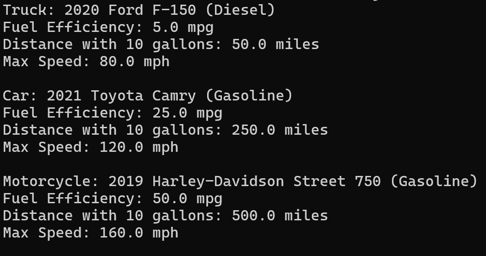

9. Write a Java program to create a vehicle class hierarchy. The base class should be Vehicle, with subclasses Truck, Car and Motorcycle. Each subclass should have properties such as make, model, year, and fuel type. Implement methods for calculating fuel efficiency, distance traveled, and maximum speed.
class Vehicle {
String make;
String model;
int year;
String fuelType;
public Vehicle(String make, String model, int year, String fuelType) {
this.make = make;
this.model = model;
this.year = year;
this.fuelType = fuelType;
}
public double calculateFuelEfficiency() {
return 0;
}
public double calculateDistance(double fuel) {
return calculateFuelEfficiency() * fuel;
}
public double calculateMaxSpeed() {
return 0;
}
@Override
public String toString() {
return year + " " + make + " " + model + " (" + fuelType + ")";
}
}
class Truck extends Vehicle {
double cargoCapacity;
public Truck(String make, String model, int year, String fuelType, double cargoCapacity) {
super(make, model, year, fuelType);
this.cargoCapacity = cargoCapacity;
}
@Override
public double calculateFuelEfficiency() {
return 5; // Truck fuel efficiency (miles per gallon)
}
@Override
public double calculateMaxSpeed() {
return 80; // Truck max speed in mph
}
}
class Car extends Vehicle {
int passengerCapacity;
public Car(String make, String model, int year, String fuelType, int passengerCapacity) {
super(make, model, year, fuelType);
this.passengerCapacity = passengerCapacity;
}
@Override
public double calculateFuelEfficiency() {
return 25; // Car fuel efficiency (miles per gallon)
}
@Override
public double calculateMaxSpeed() {
return 120; // Car max speed in mph
}
}
class Motorcycle extends Vehicle {
boolean hasSidecar;
public Motorcycle(String make, String model, int year, String fuelType, boolean hasSidecar) {
super(make, model, year, fuelType);
this.hasSidecar = hasSidecar;
}
@Override
public double calculateFuelEfficiency() {
return 50; // Motorcycle fuel efficiency (miles per gallon)
}
@Override
public double calculateMaxSpeed() {
return 160; // Motorcycle max speed in mph
}
}
class main {
public static void main(String[] args) {
Vehicle truck = new Truck("Ford", "F-150", 2020, "Diesel", 3000);
Vehicle car = new Car("Toyota", "Camry", 2021, "Gasoline", 5);
Vehicle motorcycle = new Motorcycle("Harley-Davidson", "Street 750", 2019, "Gasoline", false);
System.out.println("Truck: " + truck);
System.out.println("Fuel Efficiency: " + truck.calculateFuelEfficiency() + " mpg");
System.out.println("Distance with 10 gallons: " + truck.calculateDistance(10) + " miles");
System.out.println("Max Speed: " + truck.calculateMaxSpeed() + " mph\n");
System.out.println("Car: " + car);
System.out.println("Fuel Efficiency: " + car.calculateFuelEfficiency() + " mpg");
System.out.println("Distance with 10 gallons: " + car.calculateDistance(10) + " miles");
System.out.println("Max Speed: " + car.calculateMaxSpeed() + " mph\n");
System.out.println("Motorcycle: " + motorcycle);
System.out.println("Fuel Efficiency: " + motorcycle.calculateFuelEfficiency() + " mpg");
System.out.println("Distance with 10 gallons: " + motorcycle.calculateDistance(10) + " miles");
System.out.println("Max Speed: " + motorcycle.calculateMaxSpeed() + " mph");
}
}
